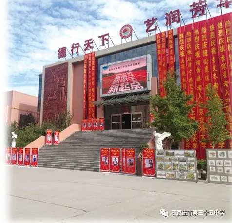

2020-12-14 17:10:14
———石家庄市第三十五中学（石家庄美术职业学校）如何成功逆袭
参加高考考生1061人，艺术类本科双上线1025人，上线率96.61%，“双一流”院校和独立学院类录取175人……2020年高考录取结束之后，微博上这样的一份“录取统计”获得了30多万的阅读量，这份“录取统计”描述的是石家庄市第三十五中学2020年的高考成绩。
一所曾经名不见经传，甚至一度被认为是一所落后学校的美术职业高中，是如何在短短几年时间实现从薄弱到优质的大逆转呢？

筚路蓝缕，栉风沐雨五十年
石家庄市第三十五中学（石家庄美术职业学校），坐落于太行山下，滹沱河畔，位于省会城市石家庄市新华区明珠街18号，是国家级重点中等职业学校。学校占地33000余平方米，建筑面积35000余平方米，目前美术在校生3100多名，58个教学班，教职工228名。“从1970年建校至今走过了整整50年的历史，50年间35中几次更名，办学特色几经转变，发展成现在的中职美术学校。”谈起学校的发展历史，校长尚平均说。
我校1970年在原新华路第一小学的基础上成立， 8月份开始招初中生。1974年开始招普通高中生，成为完中。1984年5月开设了第一届工艺美术职中班，实行错位发展。1992年，美术中职班并入石家庄市第一中专，中职停止招生，只剩初中生，校名为石家庄市第三十五中学。1994年，恢复中职美术生招生。1997年加挂“石家庄美术职业学校”校名。2000年评为“河北省重点中等职业学校”，2004年被教育部评为“国家级重点中等职业学校”。美术绘画专业于2000年和2014年先后被河北省教育厅评为“省级特色专业”及“省级骨干专业”。2008年，停止了初中招生，致力于打造河北省“特色鲜明的艺术殿堂，品质卓越的现代名校”。2011年于现址建成新校区，结束了长期租地办学历史，实现三个校区合并，学校发展进入了快车道。
如今的35中教学设施一流，现代化气息浓厚且环境优雅，到处充满艺术气息。走进校园，会看到和其他学校不一样的风景。以“美”字命名的建筑，随处可见的雕像作品，维纳斯、胜利女神、屋大维、米开朗基罗……每一尊石雕都是一个故事，引领着爱艺术的学子开启美术历程。


图书馆楼恢弘雄伟，不仅是高大和层层台阶造成的视觉感受，更是35中学子迈入艺术殿堂的阶梯。台阶两侧，两幅巨幅壁画由学校美术老师设计，描绘了东西方艺术的最高成就。


走进教学楼、图书馆，你会看到一尊尊石膏像；精心设计的廊道文化；艺术展厅的美术作品展，有学生的优秀作品，也有美术教师的艺术创作。浓厚的艺术氛围，会带领每一个走进校园的学子，一点点接受艺术文化的熏染，从而培养艺术家的眼光、艺术家的思想境界。而在教学楼后面，林荫木亭藤蔓勾勒出静谧的学校环境。


立德树人，肩挑责任与希望
作为有3100余名住宿学生的美术职业学校管理难度超乎想象，从校领导做起，轮流驻守学校。校级干部四天住一天，教育处、年级主任每周住四天，其余中层五天住一天，与师生同吃同住，以便及时处理学校事务，解决师生困难。老师们每天早上六点到校，跟早读、盯课间操，晚上十点学生睡下后才离开校园，全天候陪伴学生，让每一个学生都充满希望，并且让他们在校学习三年，既成人也成才。
“正是这支敬业奉献的团队，他们把岗位作为干事创业、爱国奉献的舞台，始终践行‘以学生为中心’‘学生在，老师在’等职业理念，兢兢业业、任劳任怨，支撑起学校的快速持续发展，为学生开启了更好的未来。”说起学校的教职员工团队，校长尚平均动情地说。

养成教育，以规矩成就品行
每天大课间，学校操场上喊号声激越，3100余名学生的跑操方队整齐划一，此场景已是多年之常态，男生平头飒俐，女生齐耳短发，精神抖擞，张扬着青春的激情。


“教育家叶圣陶说：教育的过程就是改掉坏习惯，培养好习惯的过程。多年管理实践中35中形成了针对学生日常行为的‘四条红线’，即在学校‘不抽烟，不打架，不带手机，不谈恋爱’，用四条铁的纪律约束学生，一旦突破就会受到相应的惩罚。”尚平均校长介绍说，严格的管理让刚入学的学生感到不习惯，甚至为此还“投诉”过学校，但却赢得了家长们的赞誉，“我们认为，没有戒惩的教育是不完整的教育，约束是为了更好的成长。”
在此基础上，学校还提出：“在什么区域内，做什么事情”。吃饭在餐厅：排队打饭、按需购买、光盘行动、节约粮食、餐桌干净、餐具归位，一日三餐，秩序良好。活动在操场：上下午课间操、体育课、课外活动要求学生一定到操场活动，确保学生每天锻炼一小时；跑操三分钟到位，班级间距两米，跑步节奏整体，班班口号响亮，为学生终身健康奠定基础。学习在教室：要求“入室即静，入座即学”，禁止追逐打闹，不做与学习无关的事。“一个人只有排除杂念、专心致志，将智慧、灵感全部调动起来，才能有所创造、有所成就。”尚平均校长说。
活动育人 在体验中成长
35中历来重视活动育人，每年开学前，学校教育处都要把一学期的活动安排出来，确保学校在学习之外每个月有一次大的活动。每周一次的升国旗仪式由各班学生轮流主持，激发爱国情感、责任意识，培养学生孝亲友人、自尊自爱自律；结合重大节日开展系列活动，每年清明节，徒步13公里到华北烈士陵园扫墓，进行爱国教育，锻炼意志品质；每年暑假，到河南石板岩采风写生，感受自然，描绘自然；每年元旦联欢，学生策划主持，培养学生的参与意识、合作能力和组织能力；学生社团丰富而有特色，其中“馨艺”啦啦操队包揽省市区各项赛事的一等奖第一名，培养学生永争第一的精神。
在今年的秋季运动会上，学校操场的布置，各班级的入场表演都由学生组织策划且表演精彩。“这些活动锻炼了学生们的组织策划能力，也培养了集体主义观念，对每一个学生的成长都是十分有帮助的。”尚校长说。


研修推进，课堂焕发新光彩

根本立于教学，35中一改传统课堂教学模式，在反复探索实践下逐步形成了适合美术生的“五环节”课堂模式。“五环”是学生学习的五个环节，即自主学习，读懂课本；完成学案，训练应用；合作交流，讨论质疑；展示点评，总结升华；总结反刍，当堂检测。又有“十步”，即教师教学的十个步骤，课前辅导，组织教学并导入新课，展示与解读学习目标，导学案预习作业讲评，基础知识梳理，高效讨论，高效展示，点评（学生）、质疑（生、师）与知识扩展（师生结合），知识小结，学科班长评价学生表现、本节收获和今后努力方向。“五环”强调学生如何学，“十步”针对老师怎样教，两部分互相联系，不可分割，让课堂更有效。
现在，在教学改革不断深化的过程中，各学科又在突破模式，探索各具学科魅力的课堂教学规范，学校每学期在高一、二教师中进行一次极具仪式感、覆盖全部学科的课堂改革学科周活动，鼓励每位教师构建自己的教学体系，形成个性化教学风格。通过教学观摩和研讨等研修活动，唤醒了教师的“主张”意识，造就了更多具有鲜明教学特色的优秀教师。现在学校的很多老师都有了自己的教学风格，深受学生和家长的欢迎。

春华秋实，高考录取连年攀升
2019年高考，1167人参加美术统考，本科上线1143人，本科双上线人数首次突破千人大关，上线率97.94%，位居全省前茅。当年，本科提前批A录取389人，本科提前批B录取306人，本科提前批共录取958人，本科录取率82%。其中985、211重点院校和独立学院类录取133人，保持了不断提升的态势。
2020年高考，参加考试1061人，艺术类本科双上线1025人，再次超过千人大关，上线率96.61%。本科提前批A段录取84人，本科提前批B段录取836人，本科C段录取31人，本科提前批共录取951人，本科录取率89.6%。其中“双一流”院校和独立学院类录取175人；上线率、录取率连年提升的基础上保持高位运转。
“从薄弱到优质，我们走过的路坎坷而坚实。凤凰涅槃，一代代教职员工开拓创新、锐意进取，让学校成功逆袭。”回顾35中的发展历程，尚平均感慨颇多：“我们也曾有过招生困难的时候，那时候每年最热的两个月，学校领导和老师们都要到全省各地最艰苦的地方去招生。曾经有一名校长跟我说，他们招生剩下的学生才到35中。现在，我们可以自豪地说，每年我们招剩下的学生才去别的学校。现在，每年招生的时候老师们再也不用往外跑了。”
如今，石家庄市第三十五中学连续十三年获得石家庄市“高中教学工作先进单位”、“高中教学进步单位”称号，获得的荣誉还有:“全国啦啦操实验学校”、“河北省劳动关系和谐先进单位”、“河北省教育工作先进集体”、“河北省教育系统先进单位”、“石家庄市教育系统先进集体”等多项荣誉。

由于社会对优质美术教育需求，在办好石家庄市美术职业学校基础上，2020年与其他学校共同合作，以35中的品牌、专业管理团队和教师，创办石家庄市联华职业中专学校，当年招生440余人，8个教学班，进一步扩大了优质教育资源，满足社会需求。
石家庄35中正走在从优质到卓越的道路上，尚有日新之求，期必硕果！
 微信公众号
网页手机版
微信公众号
网页手机版

版权所有@石家庄市第三十五中学（石家庄美术职业学校）| 地址：石家庄市明珠路18号 电话：0311-87894108 0311-87031067 | 冀ICP备 16023227号
学校邮箱: sjzmszyxx@126.com 校长信箱：sjzmzshang@126.com